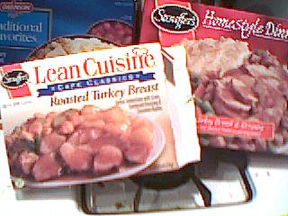
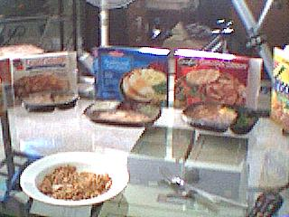
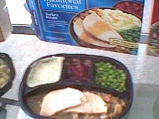
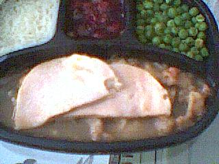
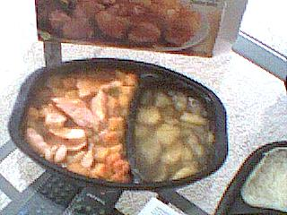
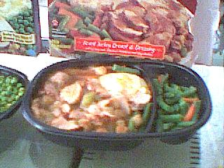
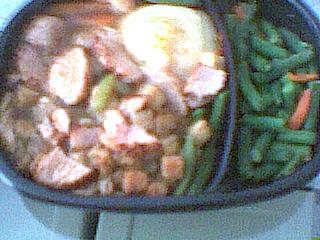
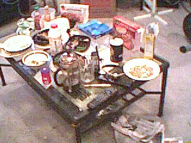

Turkey Taste Test
Thanksgiving, 2001
The Judges:
All dishes were prepared according to directions on box, by baking in
a 350-degree oven for approximately 35 minutes.
Swanson Traditional Favorites


Turkey Breast with Gravy, Stuffing, Mashed Potatoes and
Apple-Cranberry Dessert
Fat 6g (total 333g)
- Appearance C+
- Turkey kind of bland, but good texture - meaty
- Potatoes so starchy - like dough - ecch...
- Peas are creamed inside (like pea soup) :-(
- "Dessert" is more like a condiment - a cranberry pie filling - and too
sweet
Stouffer's Lean Cuisine

Roasted Turkey Breast - Turkey Tenderloins with Gravy, Cornbread
dressing, and cinnamon apples
Fat 2g (total 276g)
- Appearance D
- Turkey juicy and tasty
- Apples rock
- Stuffing nasty - like bread pudding - soggy
- Not enough flavor/spice in turkey stuffing
Stouffer's Homestyle Dinners


Roast Turkey Breast and Dressing with Gravy, Mashed Potatoes and
Vegetables
Fat 16g (total 453g)
- Appearance A+
- Beans B (they have good resistance - not too mushy)
- Turkey not salty enough - with the brown sauce it's OK - also a little
fatty (as opposed to meaty)
- Gravy is a little light/bland
- Stuffing is soggy
- Potatoes fluffy and tasty
- NO DESSERT!!!
- Just right
- Good flavor
- Nice textures
Conclusion: Stouffer's Lean Cuisine seems the optimal choice. Although
Stouffer's Homestyle Dinners wins on appearance and holds its own
on taste, its lack of included dessert is an unforgivable flaw in
a frozen dinner.
Note that stuffing was universally bad; we advise
preparing stuffing separately from soggy turkey dish (a la Stove-Top).
Click here to see all photos of the event.

Alex Chaffee
Last modified: Wed Nov 28 19:00:03 PST 2001
{kind=link}
{kind=link}
{kind=link}
{kind=link}